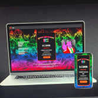 Drunk Millionaire NFT 醉酒的百万富翁 ($DM) 让加密更有趣、更安全！ 现在有了它自己的 NFT 收藏品！ 为开发人员和投资者创建工具。帮助他们不被骗。 每次购买 NFT 的 21% 用于购买和销毁 $DM 代
Drunk Robots Drunk Robots 是一款由 Liquidifty.io 团队提供支持并建立在 Binance Smart Chain 之上的赚钱游戏。 在 Drunk Robots 中，你的主要任务是生存并占领被醉酒的垃圾机器人吸收的城市，他们唯一的兴趣是 $METAL 啤
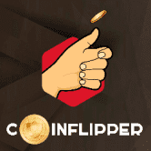 DSG - CoinFlipper DSG CoinFlipper - 一款完全透明且诚实的 Jackpot 游戏，是 DSG 生态系统的一部分。 DSG 是一个透明的去中心化游戏生态系统，让您不仅可以玩和赢，还可以投资和获得分红。玩，赚
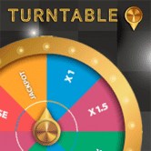 DSG - Turntable DSG 转盘 - 一个完全透明和诚实的命运之轮，是 DSG 生态系统的一部分。 DSG 是一个透明的去中心化游戏生态系统，让您不仅可以玩和赢，还可以投资和获得分红。玩
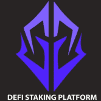 DSP Token DSP 是一个利润丰厚的 Staking Dapp 平台。 DSP 是从以前的质押平台背后的理念发展而来的，设计时考虑到一件事，即 STAKERS。通过拥有 DSP 代币并在我们的质押门户
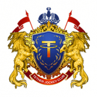 DT Jockey Club DT Jockey Club 是全球首款创新型区块链虚拟赛马养成类游戏，同时是一个基于DT 公链的体育竞技游戏平台。DT Jockey Club结合了区块链公开透明和不可篡改的特点
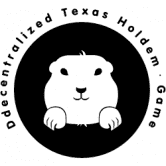 DTH (Decentralized-Texas-Hold’em) DTH（去中心化德州扑克）是世界上第一个基于 EOS.IO 的下一代德州扑克平台。发牌过程不集中控制，不扣佣金，不合作洗牌，解密过程中引入密码碎片，整个过
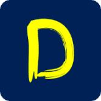 DTournaments DTournaments 是在 TRON 区块链上使用智能合约的下一代去中心化锦标赛平台，全自动去中心化赛事平台，我们的目标是为各种在线多人游戏和大逃杀游戏提供锦标赛。DTo
DUCK NETWORK 💰通过质押您的 $BUSD 来铸币 $DUCK (APR 1460%) 💰 质押 $DUCK 赚取更多 $DUCK (APR 2,190%) 💰卖出 $DUCK 赚取 $BUSD $DUCK 代币地址：0x4eACB72F6BA99e1C69ac053dcb2813
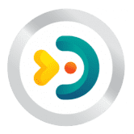 Duckie Land Duckie Land 是一款运行在区块链上的元界多平台（PC、Android、IOS 和 VR）多人在线游戏，每个 Duckie 都是不可替代的代币或 NFT。数以百万计的人可以
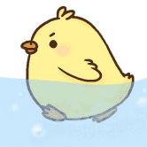 DuckyDeFi Fair 为所有人推出 DeFi 收益农业，提供流动性并开始赚取新鲜鸡蛋。 388 个独特的零代在 14 小时左右下降。 每只鸭子 458 CRO。 （如果你知道为什么选择 458） 每笔
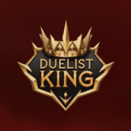 Duelist King Duelist King 是一个成熟的与区块链无关的在线 NFT 纸牌游戏平台，旨在支持纸牌游戏的代币化和民主化。 所有关于发卡、分发和收益分配的决策都由区块链上的去中心化
Dumpling Swap Dumpling Swap 是一个单产农业项目，由一群在 DeFi 领域拥有丰富经验的热情软件开发人员开发。我们的使命是通过提供强大的 DeFi 生态系统来创建一个经济上可持续的单产农
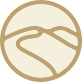 DuneSwap Duneswap 是 Oasis Emerald ParaTime 网络原生的自动化做市商/去中心化交易所。 DUNE 是平台的原生代币，可以通过耕种/质押或交易获得。 DUNE 是根据在 Oasis Emerald ParaTime 上通过 Distributor 和/或 Vaults 开采的时
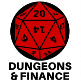 Dungeons and Finance Dungeons & Finance 正在将角色扮演游戏带到 Polygon Network。在 Encounters 中通过单产农业开始您的冒险之旅，以获得足够的设备并面对地下城的挑战。 我们是一家独立视频游戏
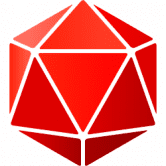 DungeonSwap DungeonSwap 是币安智能链上一款去中心化的桌面 RPG 风格网页游戏，具有收益农业功能和 NFT。 除了收益耕作之外的独特功能是名为“The Dungeon”和“Bo
DuskBreakers 成为 DuskBreaker 意味着加入由 10,000 名新兵组成的精选小队，他们每天都在探索充满朋友、敌人和超凡脱俗技术的神秘外星飞船。您将成为一个社区的一员，该社区直接影响
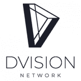 Dvision Network Dvision Network 是一个多链元界平台，建立在以太坊网络和币安智能链之上，并由 DVI 实用程序和治理令牌提供支持，跨越其所有平台支柱。 Dvision 分为 3 个主要平台支柱，即 NFT
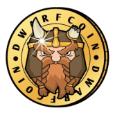 Dwarfcoin Dwarfcoin 是一个纯粹由社区驱动的 memecoin，其灵感来自幻想文学中的矮人。它于 2021 年 11 月启动，旨在为加密空间提供一个有趣、新颖且安全的代币。它的主
DWorld DWorld 是 Fantom 网络上基于 OBOL 代币的去中心化储备货币协议。每个 OBOL 代币都由 DWorld 国库中的一揽子资产（例如 USDC、OBOL-FTM LP 代币等）支持，赋予其不能低
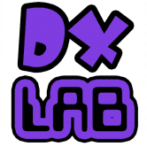 DXL Finance DXL 是币安智能链上最卡通的 DeFi 应用。我们带来安全的服务、创新的耕作和收获策略以及高 APR，同时也让互动变得有趣和愉快！欢迎来到 DXL 世界！DXL 金融
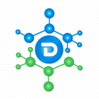 Dynamis Finance 在 Polygon 上运行的全面革命性 DeFI 平台，建立在力量、潜力和能力之上。 这些原则强调了我们对 Dynamis Finance 的愿景——一个让用户通过探索去中心化金融的全部潜力来实现财
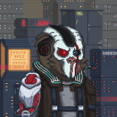 Dysto Apez Official 4444 Genesis Dysto Apez 生活在以太坊区块链上。 $SCRAP 是这个反乌托邦世界中的王者，只有一个目标。元界统治。Dysto Apez 是一个完全动画的 4444 系列。在以太坊区块链上唯一
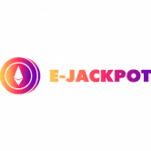 E-Jackpot E-Jackpot 是一款由以太坊智能合约提供支持的双赢游戏。玩家选择一个价格从 0.05 到 2ETH 的箱子。在每种情况下，都有不同面额的硬币。智能合约代码是完全开放的，这使
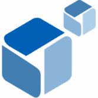 E2D Game E2D 游戏是 200eth.com 的交易所，持币者将从游戏量中获得红利，即。 200eth 和交易所本身的交易量。由于买卖与合约本身相互作用，流动性为 100%。购买和出售的每枚代
Eagle.Farm Eagle Farm 的概念是独一无二的，它是一个收益农场，不为任何去中心化交易所 (DEX) 提供流动性，因为这就是 Mouse.Farm 和 Toad.Farm 服务的目的。 相反，这个收益农场的目的是成为 Mouse 和
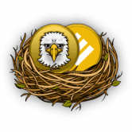 Eaglenest.Finance Farmhub 生态系统目前由三个农场组成；两个养殖场，一个饲养场。 TOAD 和 MOUSE 代币可以通过为去中心化交易所（DEX）提供流动性来获得。 流动性提供者将获得这些代
EagleSwap Eagle Vision ADA，桥接 BSC-ADA 的 DeFi 应用程序的完整生态系统。由智能合约支持的数字应用程序的多链和跨链解决方案 BSC-ADA DEX (EagleSwap) 多链孵化器，Launchpad 将新的 ADA 项